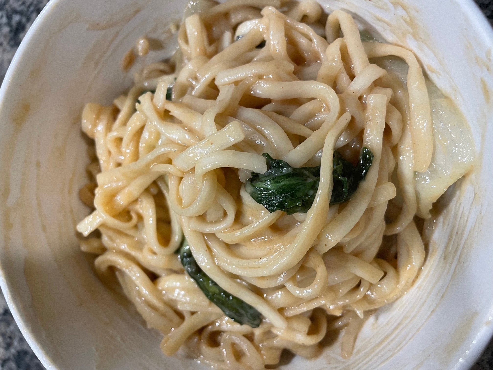

Thai Peanut Noodles

Description
Tossed in a simple but delicious peanut sauce and stir fried with as many
vegetables you want, this recipe will undoubtedly satisfy your cravings!
Ingredients
Noodles
-
6 ounces dry noodles (rice noodles, pad thai style rice noodles,
soba noodles)
-
4 cups mix of vegetables (spinach, bok choy, red cabbage, etc),
shredded or grated
-
1 bell pepper, finely sliced
-
3 green onions, sliced
-
1 tablespoon (or less, or more) jalapeño, finely chopped
-
(Optional garnish) basil and mint
-
(Optional garnish) 1/4-1/2 cup roasted, crushed peanuts
Thai Peanut Sauce
-
5 thin slices ginger- cut across the grain, about the size of a quarter
-
2 cloves garlic
-
1/2 cup peanut butter (or sub almond butter!)
-
1/2 cup fresh orange juice (roughly 1 large orange)
-
1/3 cup fresh lime juice (roughly 2 limes)
-
1/4 cup soy sauce
-
1/3 cup honey, agave, or maple syrup
-
1/4 cup toasted sesame oil
-
A squirt of sriracha sauce
-
1 teaspoon salt
Steps
-
Cook Noodles: Cook noodles according to directions on package. Drain
and chill under cold running water.
-
Blend the Peanut Sauce: while noodles are cooking, blend the peanut
sauce ingredients together until smooth.
-
Toss: Heat up oil in the pan and then transfer the noodles. Pour the
sauce evenly over the noodles and then toss. Then, add the vegetables, mix, and cook them until
they are done.
-
Taste: Adjust salt, add chili flakes, add more lime, garnish with herbs and
lime wedge.